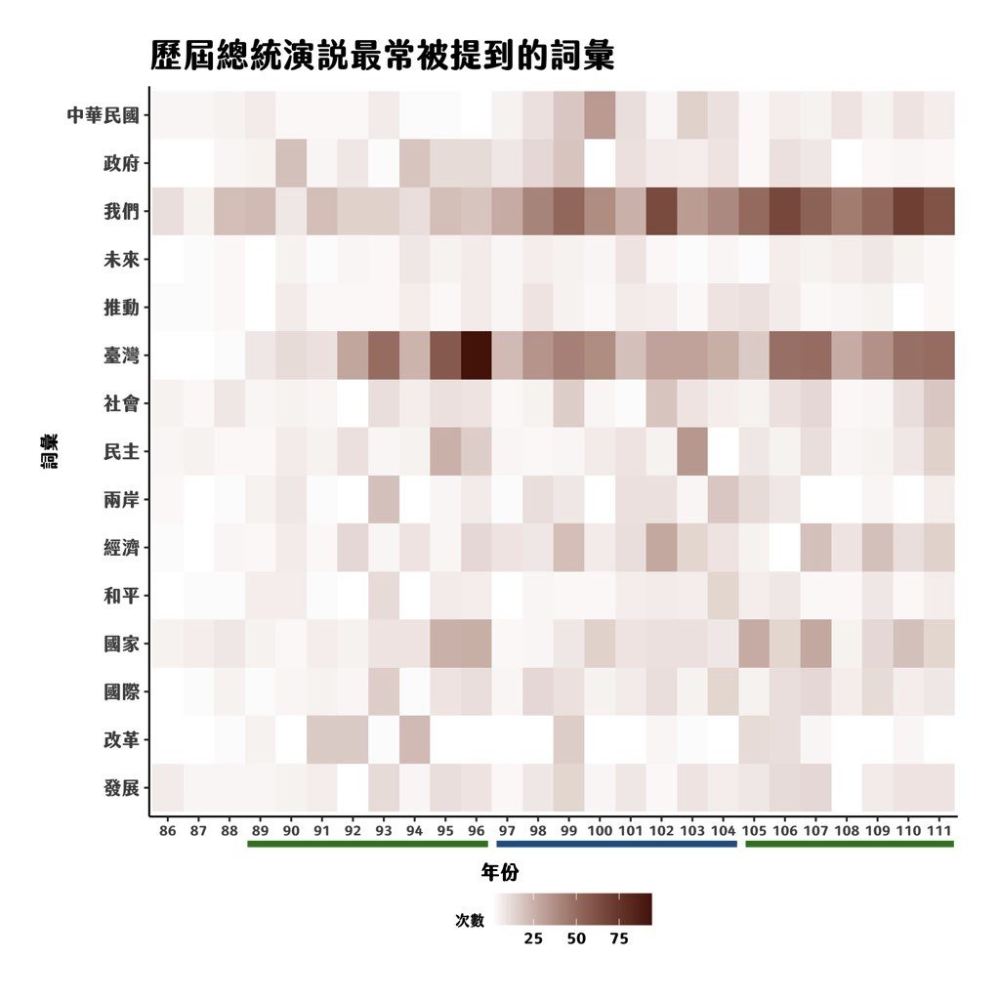
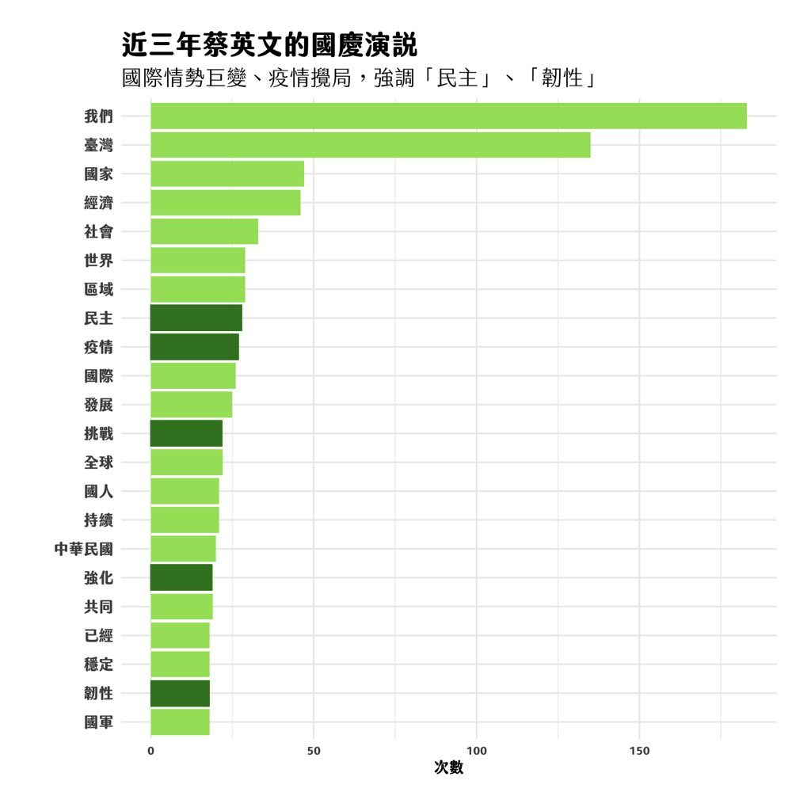

This article is written in Chinese.
2022.10.10 · 數據圖表 · 數位敘事
【國慶演說用詞分析】蔡英文總統今年強調了什麼？
2022 年 10 月 10 日是中華民國國慶日，歷年來各屆總統透過國慶演說除了傳達對於國家治理的重要方向，也會從中強調個人的政治理念和國家未來的走向。
爬梳歷年國慶演說可以發現，各總統皆在國慶演說中強調「中華民國」、「臺灣」，每年強調的程度與頻率不一。此外，近年來少強調「兩岸」，更重視「發展」、「經濟」等詞彙。

而今年蔡英文總統在國慶演說中值得一提的是，有別於前兩年，今年國慶蔡英文反覆強調這是「中華民國立足台灣以來的第73個國慶日」，這樣的史觀是近年來幾乎不曾見過的敘述方式，使用「中華民國在台灣」時間作為敘述脈絡。
此外，在疫情步入第三個年頭，與國際情勢變化急遽及兩岸關係的緊張情勢，強調打造更精實的四大韌性，包含經濟產業、社會安全網、民主自由體制及國防戰力。

每個媒體都在算數學，算到底講了幾次台灣、幾次中華民國，就不多贅述了，好玩的圖表給大家參考。
本篇將歷年國慶演說全文透過 jieba 套件斷詞分析，統計詞彙頻率。